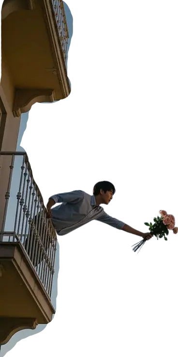
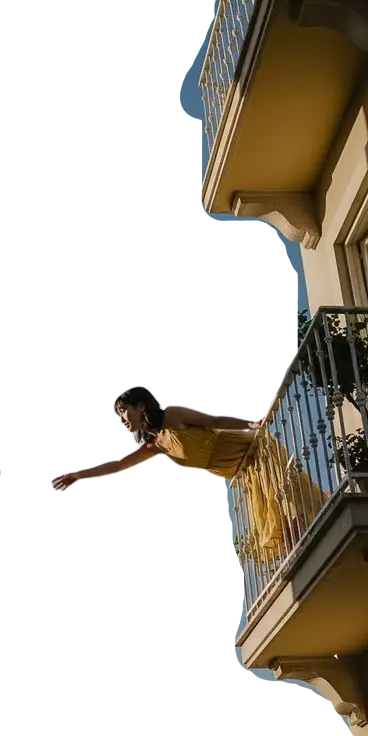
Hinged
or not?
Service classification & digital matchmaking
Digital matchmaking has turned one of humanity’s oldest social practices into a technology-enabled service ecosystem. What families, communities and institutions once mediated is now facilitated by platforms using algorithms, behavioural data, AI and user participation.
Macro trends shaping the industry:
- Urbanisation and mobility
- Changing relationship norms
- Mobile-first behaviour
- Artificial intelligence
- Trust and safety
The ecosystem sits under lifestyle and social networking services, with a focus on digital matchmaking as a service.
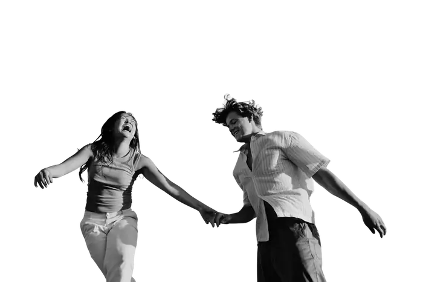
DESIGNED TO BE DELETED
Hinge is a technology-enabled matchmaking service that connects people seeking meaningful romantic relationships through curated profiles, algorithmic recommendations and guided interactions.
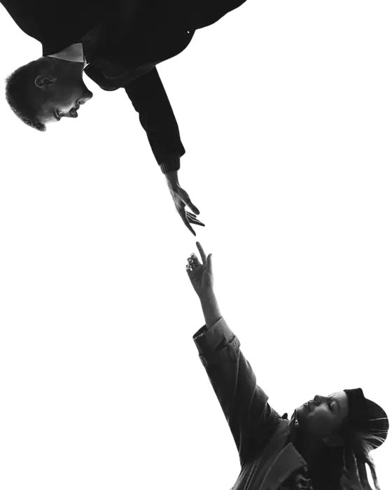
Service complexity
Not only a mobile app but a socio-technical system of users, algorithms, moderators, data infrastructure, safety protocols and business strategy.
Relationship-centric philosophy
Designed around long-term relationships rather than maximising the number of matches.
Trust & safety mechanisms
Profile verification, reporting and moderation build trust where users interact with strangers.
Conversation-first model
Users like or comment on specific profile elements, prompting more intentional, contextual conversations.
Smart recommendations
The platform learns from interactions to personalise suggestions, AI built into service delivery.
Match Group
Relationships are at the core of everything the product does.
purchasesMonetisation model
Market share
- Positioned as the fastest-growing app in intentional dating
- Penetration tracked against Tinder and Bumble by city tier
- Ads lean on “the dating app designed to be deleted”
Community campaigns
- “Awkward, Together”: embracing awkward dating moments
- “One More Hour”: grants for real-world community events
- Nostalgia content: “Do you miss the old internet?”
The Hinge difference
- Algorithm, interface and community values positioned as deliberately distinct from swipe-first competitors
- Marketing consistently reinforces intentionality over volume
| Parameter | HINGE | TINDER | BUMBLE |
|---|---|---|---|
| Primary user goal & success metric | Find a serious relationship; successful relationships and quality conversations | Meet new people (casual to serious); matches, engagement, retention | Meaningful dating with greater safety and control; respectful conversations |
| Matching strategy & AI focus | AI-driven compatibility and preferences; personalised recommendations | Swipe and engagement optimisation; match ranking | Swipe with compatibility and safety considerations |
| 2025 revenue & growth | US$690.9M, +26% YoY | US$1.863B, −4% YoY | US$783.0M, −9.6% YoY |
| India positioning | Growing among urban professionals seeking serious relationships | Highest awareness and largest user base | Popular among metro users seeking safer dating |
| Key challenge | Smaller network in emerging markets | Swipe fatigue, declining paid users, casual perception | Slower growth and declining paid subscribers |
| Target audience & design philosophy | Millennials and Gen Z professionals seeking commitment; quality over quantity | Broad audience across casual and serious; quantity and speed | Users seeking respectful interactions, especially women; safety and empowerment |
| Profile depth & interaction model | High (prompts, preferences, personality); prompt-based profiles with intentional likes | Low–moderate; swipe-based matching | Moderate; swipe-based; women message first (heterosexual matches) |
| Trust, safety & authentication | Photo verification, AI moderation, reporting, behaviour monitoring | Photo verification, AI moderation, reporting; trust through scale | Photo verification, AI moderation, reporting, strong safety features |
| Monetisation & business strategy | Hinge+, HingeX, Roses; quality of matches and long-term satisfaction | Plus, Gold, Platinum, Boosts, Super Likes; acquisition and conversion | Premium, Premium+, Spotlight, Compliments; safety and women-centric |
| Paying users (2025) & monthly ARPPU | 1.801M · US$31.97 | 9.026M · US$17.20 | 2.4M · US$26.80 |
| Global presence | Strong in US, UK, Canada, Australia; expanding | 190+ countries; largest global dating platform | Strong in US, UK, India, Australia |
| Competitive advantage | AI-powered compatibility, deeper profiles, relationship-focused brand | Network effects, largest dating pool, global reach | Women-first experience and safety differentiation |
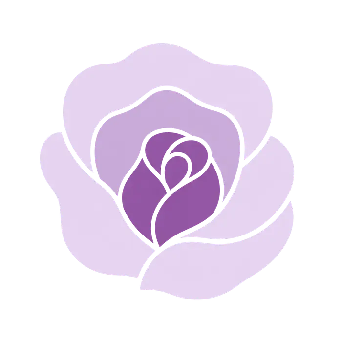
Who’s responsible on Hinge?
Primary
Free-tier users · paying subscribers · new sign-ups · active daters · users who go on real dates · customer support agents
Secondary
Reported or blocked users · trust & safety and moderation · identity verification partners · background-check partners · AI feature systems · referral contacts · app stores
Tertiary
Friends and family of users · users who abandoned the app · cross-app daters · non-users affected by misuse · regulators and compliance bodies
Who’s using Hinge?
Age groups
Sexual orientation
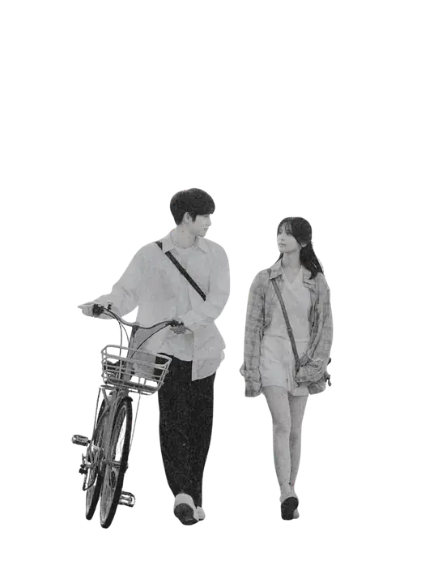
Who uses Hinge, and how
Hinge users are primarily intentional yet emotionally influenced individuals seeking meaningful relationships.
Hope is the strongest motivator, but many also engage out of loneliness, boredom, curiosity or social influence, a balance between purposeful seeking and exploratory engagement.
Each percentage is out of 100%; they are standalone values, not a sum.
Follow the arrows: new users enter at onboarding, move through calibration and the discovery loop, then down into matches, dates and offboarding. Dashed lines are the loops people take back in or out. Hover a stage to focus it.
What 90 Hinge users told us
Concerns on dating apps
COMPARED TO MEETING SOMEONE OFFLINE, HINGE FEELS…
Participation stage emotional journey
Hinge is seen as a relationship-oriented platform offering hope, reassurance and chances for meaningful connection. Users primarily associate it with finding genuine relationships, yet it also serves as a space for emotional support, exploration and meeting new people during loneliness, boredom or curiosity.
Average rating (2.78)
The moderate score suggests the core value proposition resonates, but friction across the journey drags the experience down. (n=90)
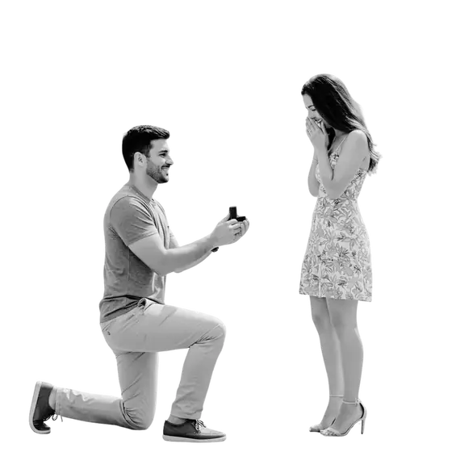
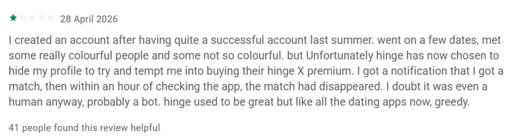
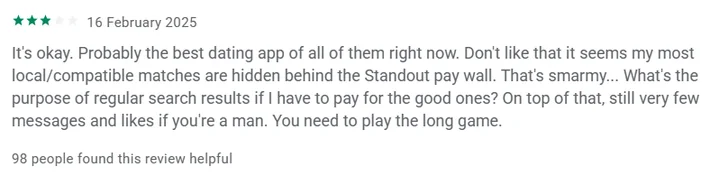
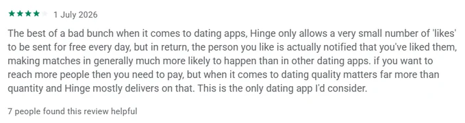
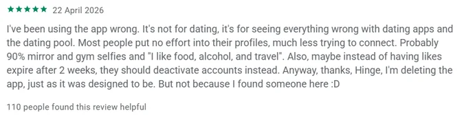
What the research tells us…
Receiving a like is the peak, and it’s a cliff after
Net sentiment swings from +52 at “receiving a like” to −18 “after a first date”. No other transition moves that far.
Deletion is rarely a happy ending
Only 29% of deletions follow “found someone”. The rest are burnout, time cost, low match quality or bad experiences.
Safety confidence is the widest gap
Only 24% feel safe meeting a match, while safety while meeting is the top concern (67%).
Skip signals are an underused compatibility layer
Goal and value mismatches drive over a third of skips, a signal that could feed recommendation transparency.
Disappointment triples after chat begins
From 7% of mentions at “starting a chat” to 28% “after a first date”: the conversation-to-date bridge is where trust breaks.
Deletion is a habit, not a decision
Nearly everyone has deleted the app at least once, and 52% more than once. “Designed to be deleted” is cyclical, not final.
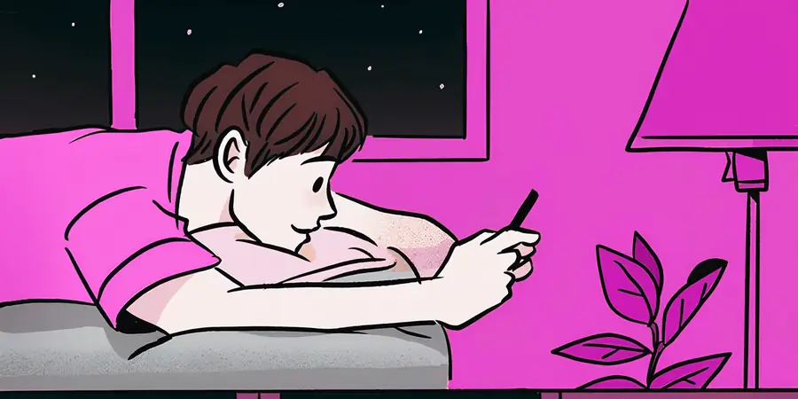
HINGING
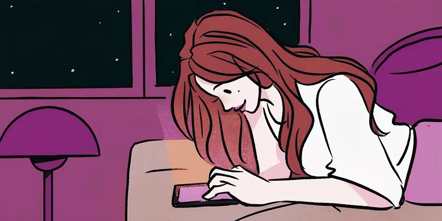
Hinge was designed to be deleted.
94% of the people we surveyed had deleted it at least once.So they deleted it, and came back, still looking.
Only 29% of deletions followed finding someone.What they wanted wasn’t a match. It was someone who gets it.
That question took us from Hinge to a new service.Introduction
What Belong is, how we got here, and who a companion is.
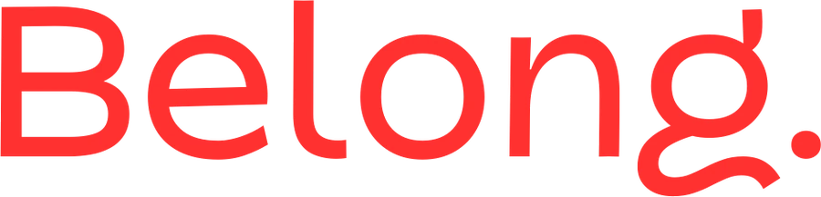
A companionship-focused service that makes meaningful human connection more accessible, emotionally safe and contextually relevant: someone to talk to, share with and feel understood by, without romantic expectations or the obligation of constant interaction.
Why? Loneliness doesn’t only come from being alone. It comes from lacking someone who understands your experiences, shares your interests, or is there in a moment of need.
Meaningful companionship, when you need it.
What do we do?
- 1Create accessible entry points into human connection.
- 2Facilitate conversations through shared interests and storytelling.
- 3Support emotional expression without imposing expectations.
- 4Enable users to discover compatible companions at their own pace.
- 5Build trust through anonymity, consent and user-controlled interaction.
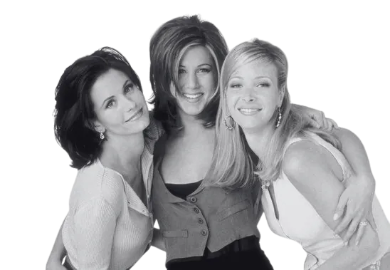
From an existing service to the emotional needs it leaves unmet.
Existing Service Design (Hinge)
How dating platforms help people discover, initiate and sustain.
Primary Research
What people actually seek when they say they want someone to talk to.
Need Identification
Presence, comfort, belonging and understanding; then validation, exploration, intimacy and safety.
New Service Design (Belong)
A comfortable, accessible way to start the connection people want.
- Existing service models and user journeys
- Entry barriers and reasons for participation
- Emotional experiences during interaction
- Archetypes and relationship expectations
- Service gaps: premium fatigue, transition gaps, non-intentional users
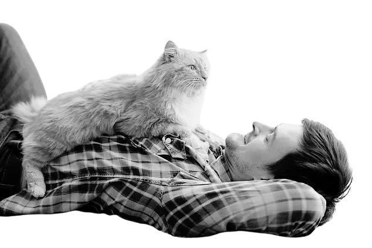
/kəmˈpænjən/ Someone who provides presence, connection and togetherness: you can spend time with them, talk to them, or simply exist alongside them, without needing a romantic relationship.
You pick a companion from family, like…
Sherlock and Enola HolmesYou make a companion from shared spaces, like…
Penelope and Eloise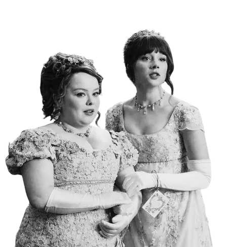
You choose a companion to spend life with, like…
Spiderman and MJ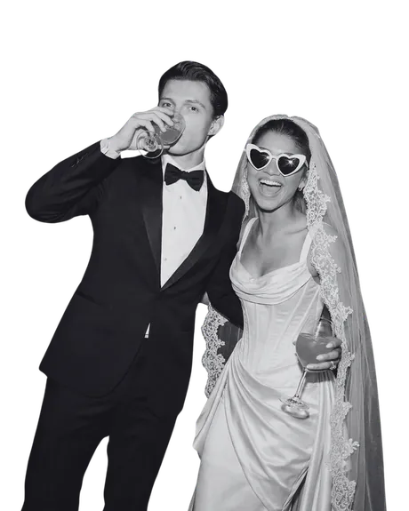
And your pets are your companion too!
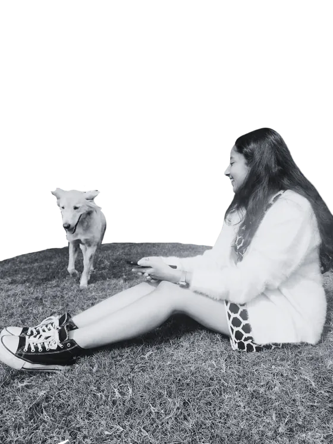
Need identification & validation
From the Hinge service gaps to what people actually seek.
Premium fatigue
When visibility and interaction are tied to paid features, value blurs with effort.
Transition gap
Moving from discovering someone to familiarity and lasting connection creates uncertainty.
Non-intentional users
Some want conversation, curiosity, support or presence, not romance.
The emerging problem
It isn’t that people can’t meet others. Conventional platforms don’t address the emotional and contextual reasons people seek connection.
- What motivates people to seek companionship?
- What makes an interaction feel safe and worthwhile?
- What causes people to withdraw?
- What forms of companionship do people value?
- What emotional state precedes the search?
Interviews with past and present Hinge users across three stages, analysed with in-vivo, emotional and value coding.
What triggers the desire to connect?
What makes a conversation comfortable and meaningful?
Why do people disengage or stop responding?
People we talked to
Emerging Emotional Vocabulary
Tap a dimension to hear it in people’s own words.
Companionship with purpose
Not just the absence of loneliness: people seek someone to fulfil a specific need, like being heard, sharing an experience, or feeling understood.
Major emerging themes
A 3 AM chat partner available in vulnerable moments, and a friend like me who shares your wavelength.
User study
Where companionship happens, the core need, and who we design for.
Online and offline, companionship grows through conversation, shared activity or simply being present. Each is a possible entry point.
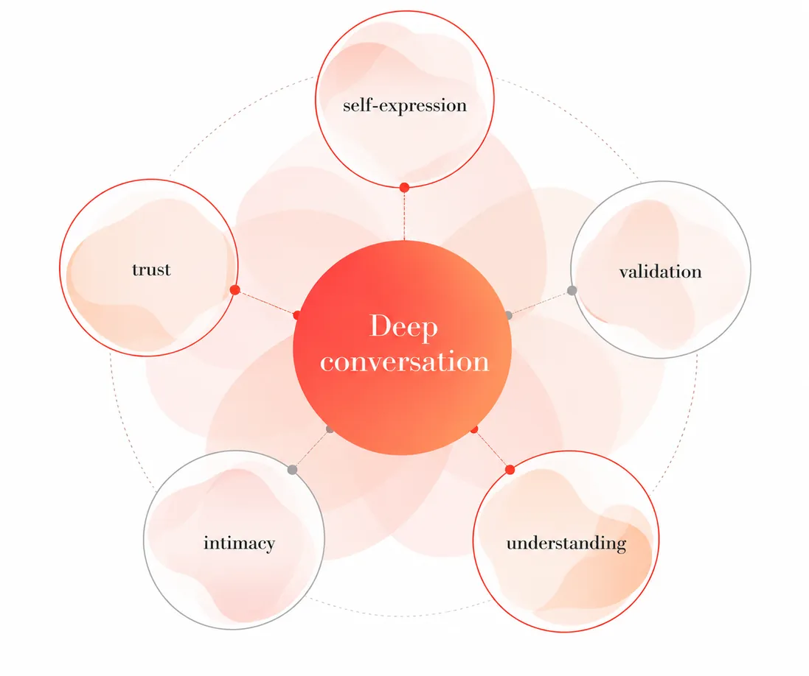
Deep conversations hold companionship
Self-expression | The freedom to open up
Without needing to filter, conversations become honest and personal.
Trust | The confidence to be vulnerable
Less fear of judgement, rejection or unwanted disclosure.
Validation | The feeling of being heard
Acknowledgement makes people keep talking and go deeper.
Intimacy | The comfort of emotional closeness
From everyday updates to memories, fears and aspirations.
Understanding | The experience of being understood
Attentive listening makes conversation reciprocal.
Behavioural patterns, not fixed types: a person can move between them.
“Young adults need an accessible and psychologically safe way to find contextually relevant companionship that supports authentic, low-pressure human connection during different phases of life, particularly during periods of transition, stress, and everyday loneliness.”
Goal
Make companionship more accessible, safe and responsive to what people emotionally need.
To provide
Companionship with purpose anchored by deep conversations.
How might we design a service ecosystem that enables psychologically safe, context-sensitive companionship for young adults during everyday transitions, rather than simply helping them meet new people?
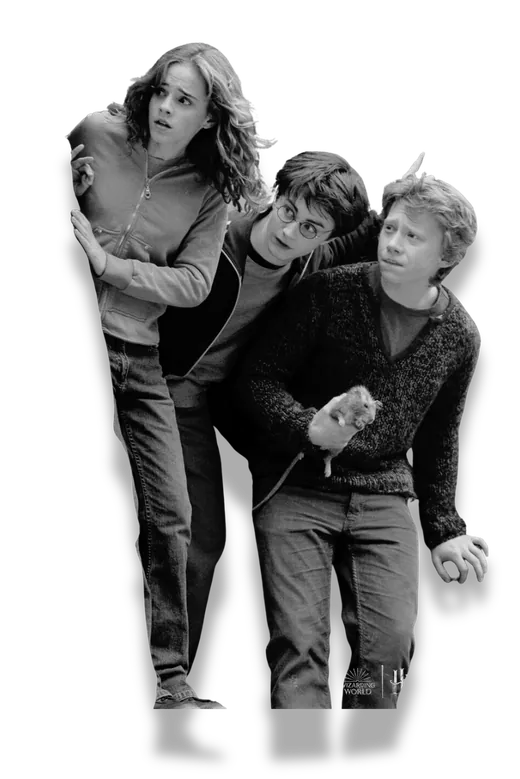
Prototyping
Music, then storytelling, then the whole platform, and how they became Belong.
- Music the shared object
- Sensory experience sound, rhythm, melody
- Biological response dopamine, oxytocin, synchronisation
- Emotional response joy, nostalgia, comfort, excitement
- Personal meaning memory, identity, experience
- Sharing song, playlist, recommendation
- Discovery of similarity “me too”, “this reminds me of…”
- Vulnerability stories, memories, feelings
- Repeated rituals listening together, swapping songs
- Companionship the outcome we design for
Hypothesis
Can music make it easier for strangers to start a conversation, and can that grow into companionship?
instead of AB we create A♪B
- 01Does a third-party enabler make the first interaction easier?
- 02Shared preferences, or partial differences: which starts the talk?
- 03Do the conversations feel comfortable and worthwhile?
Prototype → Refined: Sing – Match – Chat
What changed
Group combinations & timings
Similarity vs curiosity: similarity made people talk about different things in life and share stories; curiosity led them to find similar grounds and connect more.
Gender ratio: showed the comfort and flow of connection between same and different genders.
Singing together: broke the ice and made a safe space for one-on-one talk later.
Music worked best as a bridge into connection, not as the destination. People could start with “listen to this” instead of opening up, but connection only grew when the activity handed over to conversation at the right moment.
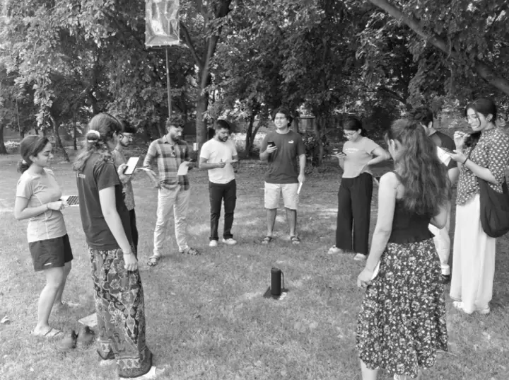
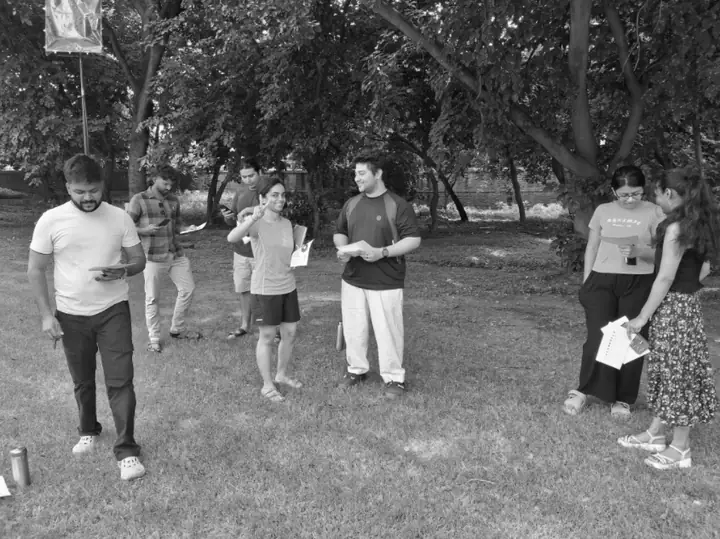
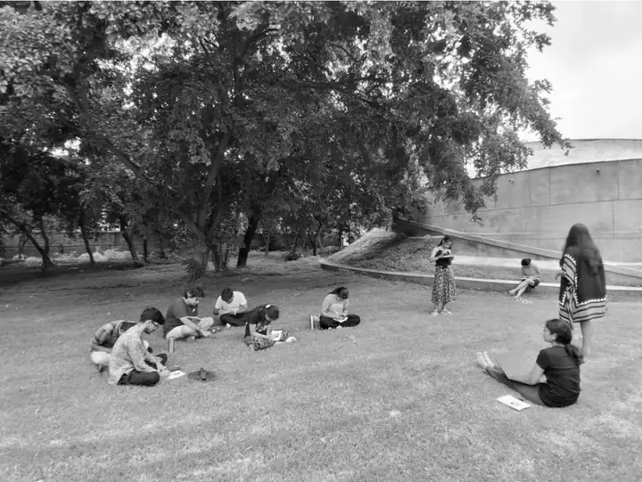
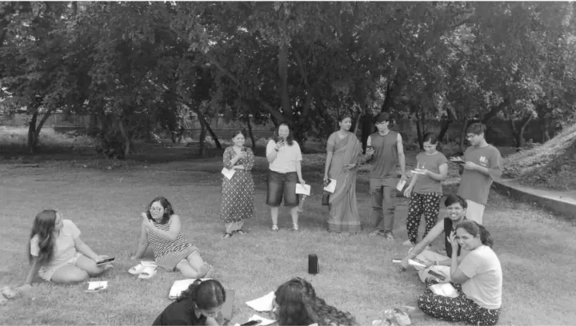
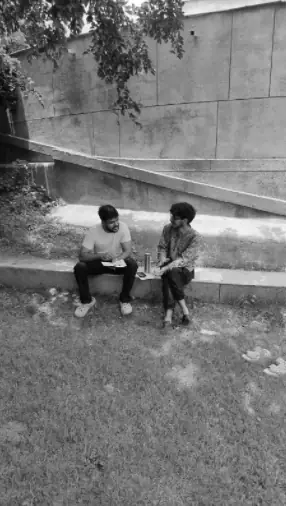
Original slide and Miro board
Stories let people share experiences indirectly, creating recognition without immediate personal disclosure. Hypothesis: can anonymous story sharing be a low-pressure entry point between strangers?
- 01Does storytelling encourage self-expression?
- 02Do prompts move talk beyond small talk?
- 03Do shared experiences create familiarity?
- 04Are users comfortable with the depth?
- 05Is it more meaningful than preference-based discovery?
Pairings and what they revealed · tap a group
Prototype → Refined session
Space curation: rules for the platform
| Safety | Safety prompts before posting, voice chat, meeting |
| Power in the chain | Storyteller owns the narrative; both curate replies |
| Overwhelming threads | Conversation tree; the person replied to curates |
| Competitive emotion | No popularity: fresh first, genre + country filters |
| Why contribute? | Nudge: “Do you have a story like this?” |
| Anonymity vs context | Basic profile: personality, interests, no photos |
The 12-step session protocol
- Welcome talk without seeing or knowing each other
- Setup dim room, board between, username card
- Username Echo, Nova or Orbit
- Ground rules share only what feels comfortable
- Turn 1 screen shows who starts; end with “What about you?”
- Turn 2 the other answers the same question
- Open conversation the talk is yours
- New prompt optional new question
- Anonymity choice stay anonymous or reveal
- Exit burst the balloon to end for both
- Natural exit tell the moderator when done
- Post-activity feedback form
Storytelling shifted the focus from what people like to what they have experienced and how they interpret it: a pathway into companionship based on shared meaning, not similarity alone.
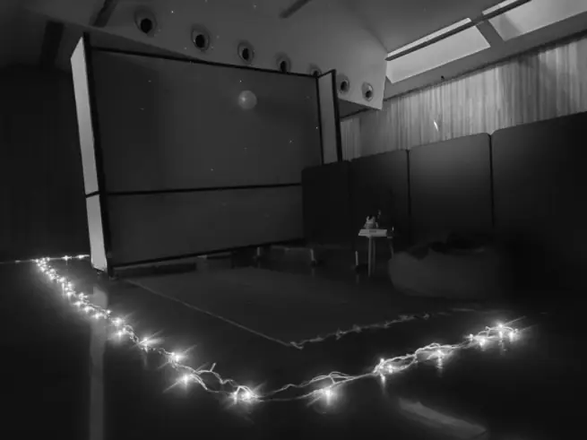
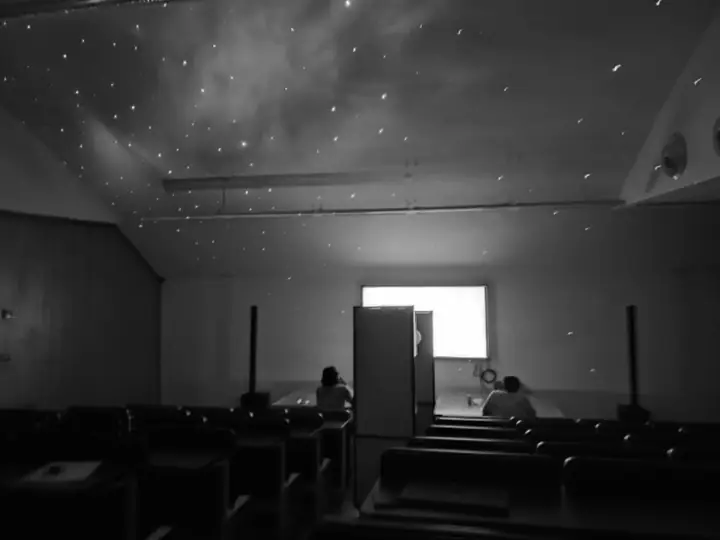
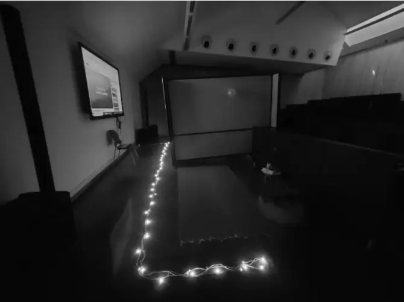
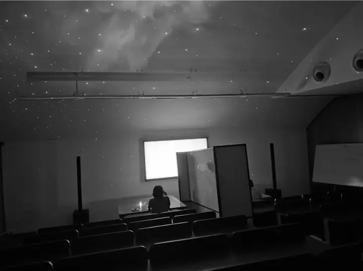
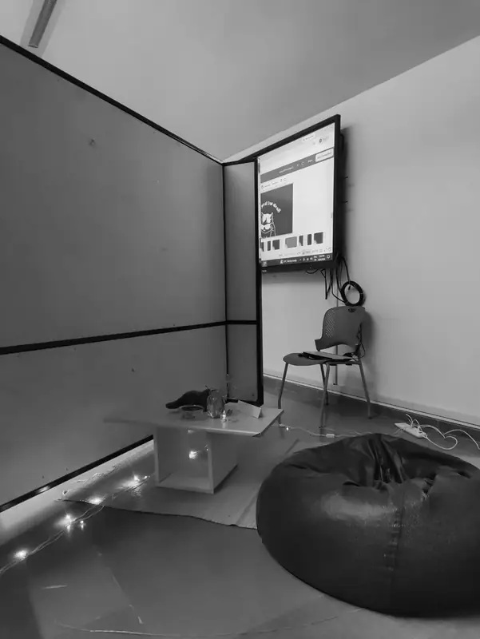
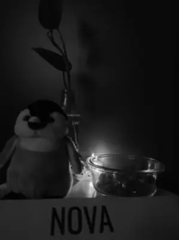
Original slide and Miro board
The individual experiments brought together as one digital service: discovery, interaction, safety and continuity working as a connected system.
1 Platform
- Is the proposition clear?
- Can they navigate it?
- Can they find a pathway in?
2 Interaction
- Can they start comfortably?
- Are the modes clear?
- Can they continue or disengage?
3 Safety
- Are privacy and consent clear?
- Can they control disclosure?
- Are report, block and exit reachable?
The Platform Journey
- 1Profile creation
- 2Discovery
- 3Conversation initiation
- 4Ongoing interaction
- 5User control
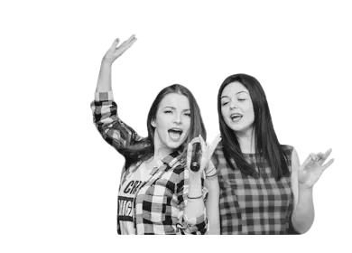
Each prototype handed something forward. Together they became the Belong service framework.
Music is the bridge, not the destination.
Kept as an emotional layerShared meaning beats similarity; anonymity lowers pressure.
Became the anchorDiscovery, interaction and safety as one system.
Became the appStory as anchor creates
- Self-expression
- Controlled self-disclosure
- Emotional resonance
- Recognition
- Shared human experience
Features
- Story-first interaction
- Emotion / similarity-based discovery
- Curiosity-based discovery
- Asynchronous connection
- Music as an emotional layer
- Low-pressure interaction
Experience choreography: Curiosity → Comfort → Expression → Discovery → Vulnerability → Connection → Reflection. The WOW moment: “I came here to talk about a song, but somehow I’m telling this stranger a story I normally wouldn’t tell.”
The anchor frameworks on Miro
The Platform
Hum vs Syncy, side by side
| Hum | Syncy | |
|---|---|---|
| Who? | People seeking genuine, low-pressure conversations | People who enjoy sharing music socially |
| What? | Anonymous, voice-first conversations | Song sharing, feeds and voice notes |
| How? | Pick topics, get matched, choose to stay connected | Share songs, explain them through voice notes |
| Gap | Music isn’t the discovery mechanism | Deep companionship isn’t the focus |
Designing Belong
Architecture, journey, theme, screens and the final prototype.
Service Information Architecture
Hover or tap a stage to follow it through the architecture.
The Theme of Belong
Calm, personal, reflective and welcoming: a sense of space rather than urgency. A dark interface with subtle gradients suits music and late-night interaction while keeping strong contrast.
Less like a competitive social feed, more like a space to explore connection at your own pace.
LETTING IT OUT IN
THE UNIVERSE
STORY
Experience
Belong
“Sign in to your constellation.” Choose who you are in the cosmos, explore your galaxy of stories, record and respond, all on the phone.
Service ecosystem
The blueprint, and the three functions that hold Belong together.
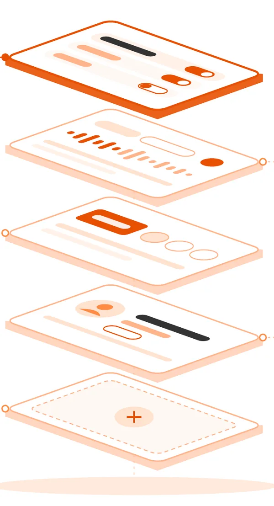
A profile built layer by layer, from a blank account to things that reveal you.
A controlled space where two users move from a story-based connection toward meaningful conversation and, potentially, sustained companionship.
Prompts fade as comfort grows.
“I have something to say.”
“I want to talk to you.”
“I want to come back and talk to you again.”
Belong · final digital prototype